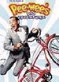

Pee-Wee's Big Adventure
“I'm a rebel, Dottie. A loner.”
A movie character has never spoken truer words. And, despite that edgy Brando-esque tone, the phrase finds itself in a cinematic treasure. A great director, an interesting story, pitch-perfect performances: All are found in Pee-Wee's Big Adventure , Tim Burton's first feature.

The reason the movie (which spawned a sequel) is a cult classic today, despite its pop-culture status at the time, is simple. A movie about an overgrown man-child who treks all the way to the Alamo , among other places, to reclaim his stolen bicycle, is anything but the type of enduring classic that will make a critic's list. Instead, it found a home among hipsters and kid-movie aficionados, and is quoted to this day, the above example being only one of a slew of choice lines.
Yes, the journey Pee-Wee goes on is epic , and the film is a true cult classic.
| next movie |